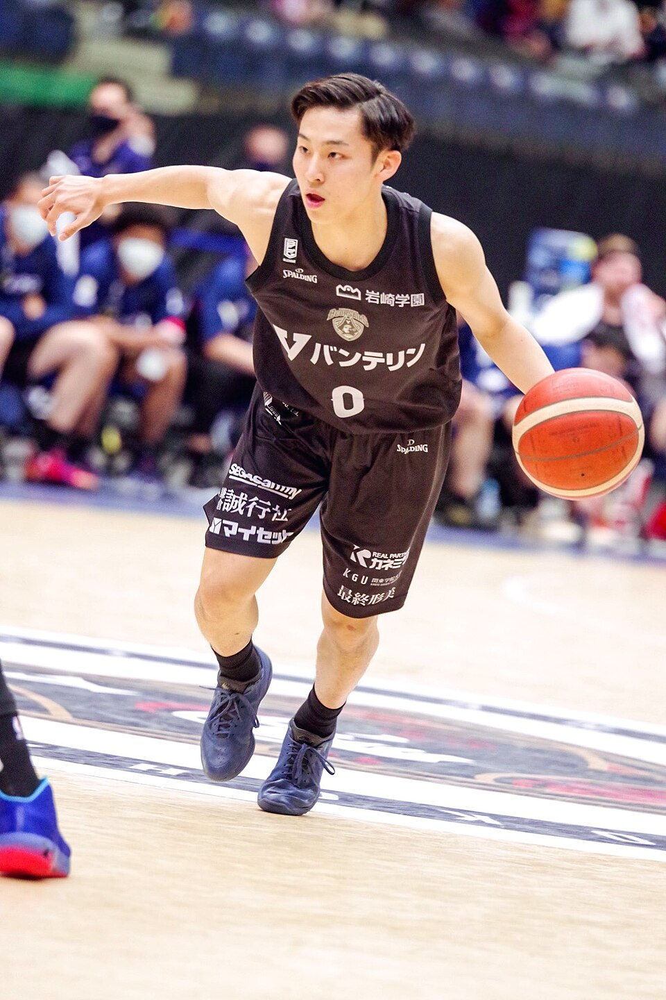

球技
•
バスケットボール / 男子5人制
かわむら ゆうき
河村 勇輝
Yuki Kawamura
🏢 所属: メンフィス・グリズリーズ / 横浜BC出身
🏅 パリ五輪フランス戦29得点🏅 NBAプレイヤー🏅 BリーグMVP & 新人賞
172cmの世界を驚かせた司令塔！神速のペネトレイトとノールックパスでアジアを席巻する
愛知・名古屋2026 今大会最終結果
予選3連勝首位通過・準々決勝進出決定🔥
予選通算: 1試合平均 18.5得点 / 10.3アシスト（アシスト暫定1位）
【最新】予選ラウンドを3戦全勝の圧倒的な強さで首位通過。超高速ドライブとノールックパスで会場のIGアリーナを大いに沸かせている。明日、メダルを懸けた準々決勝に臨む。
🎬 最後のシーン（決定的瞬間・ハイライト）
トップスピードのままノーマークの味方に通し、アリーナ全体から割れんばかりの歓声が上がったシーン。
▶️ 【YouTube】予選第3戦 相手ディフェンスの間をすり抜ける神業ビハインドバックパス を見る
📊 公式トーナメント表・競技記録速報（Draw/Results）
男子日本代表 予選〜決勝トーナメント全試合公式ボックススコア
📊 【FIBA (国際バスケットボール連盟) / 日本バスケットボール協会】FIBA公式 スケジュール＆ボックススコア を見る ➔
経歴・これまでの歩み
福岡第一高校で全国大会4度制覇。東海大学在学中にBリーグ横浜ビー・コルセアーズへ特別指定選手として加入し、圧倒的な活躍でMVPと新人賞をダブル受賞。2023年FIBAワールドカップでフィンランド戦の逆転劇を演出。2024年パリ五輪での歴史的活躍を経て、NBAメンフィス・グリズリーズと契約を勝ち取った。
主要大会ハイライト戦績
2024年
パリオリンピック
フランス戦 29得点7リバウンド6アシストの大爆発
2023年
FIBAワールドカップ
アジア最上位で五輪出場権獲得
2022-23
B.LEAGUE
レギュラーシーズンMVP、アシスト王など6冠
プレイスタイル＆世界を制する武器
電光石火のスピードで相手ディフェンスの包囲網を切り裂くドライブと、味方の決定機を演出する魔法のようなパス。高確率のプルアップ3ポイントシュートも強力。
専門家・メディアによる客観的分析・批評
✨
強み・世界トップ水準の評価
パリ五輪フランス戦での29得点やNBA進出。172cmの体躯で世界の巨人を翻弄する超高速ペネトレイト、針の穴を通すノールックパス、高確率のディープ3P。
出典・ソース:
FIBA公式 / トム・ホーバス日本代表HC / NBAスカウティングレポート
⚠️
課題・懸念される客観的事実
172cmというサイズから、相手チームが徹底してフィジカルミスマッチを狙ってポストアップやリバウンド争いを仕掛けてきた際のディフェンス負担。
出典・ソース:
バスケットボールキング / 専門アナリスト分析
愛知・名古屋2026への決意とメッセージ
大会スケジュール＆観戦のツボ
🗓️ 出場予定日程・会場
2026年9月22日〜10月3日（愛知県内アリーナ）
👀 観戦の注目ポイント
ディフェンスの間をすり抜ける超高速ドリブルと、予測不能なタイミングで放たれる華麗なパスワーク。